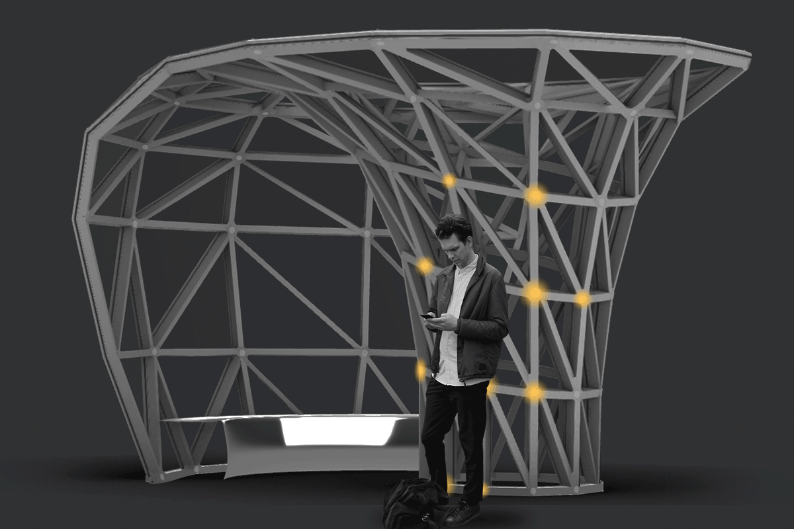

Student Competition - TU Delft 2021
Team: Cas Verhoeven, Tong Wu, Trishita Chatterjee
Supervisor: Lia Tramontini, Arie Bergsma
3D Printing Digital FabricationThe Façade Design Competition was embedded within the Master´s course „Façade Design“. The task was the creation of a free-form pavilion using a specific glass façade system by Jansen in combination with 3D-printed metal façade nodes. The number of nodes, as same as the change of angle incorporated in the nodes, was strictly limited. Our proposal was a public transport station with a tree-like structure in the middle, transitioning into a windshield.
The 3D-printed nodes should be created with the DMLS technique. This method allows high printing accuracy and allows us to integrate an optical sensor and a light into the node. Through this addition, the pavilion can interact with waiting people by tracking their movements or showing relevant information, such as a warning light indicating a bus or ferry approaching. As an initial location, a prominent position in the harbour of Rotterdam was chosen. Our proposal was awarded the first prize in the competition by a Jury consisting of delegates from Jansen, Knippers Helbig and gmp architects.